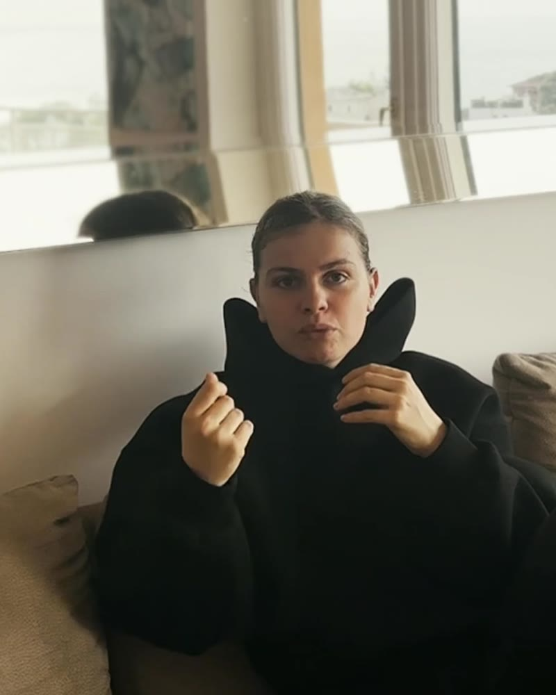

La liberté d'être là pour tes enfants
Les déposer le matin, les récupérer le soir, être au match du samedi. Tes appels se placent autour de ta vie, pas l'inverse.
Et si tu n'y arrives pas, je te rembourse.
Ne me crois pas sur parole : regarde d'abord la vidéo.
Appel gratuit de 45 minutes · places limitées chaque semaine
45 minutes, en visio, pour voir ensemble si ce que je propose correspond vraiment à ce que tu cherches.
Si tu es ici, tu sais déjà que tu as la fibre commerciale. La vraie question, c'est ce que ça peut changer dans ton quotidien. Voilà ce que le closing m'a permis, et ce qu'on va construire pour toi.
La question n'est pas de savoir si tu en es capable. C'est combien de temps tu veux encore attendre.
Si tu as déjà regardé des contenus sur le closing sans jamais te lancer, ce n'est pas un manque de motivation. C'est la méthode qui ne marche pas. Ici, tu répètes sur de vrais appels, corrigés un par un.
La trame d'un appel, la découverte, les objections. Le minimum utile, pas des heures de théorie. Et ton statut en règle avant ta première commission.
Des mises en situation chaque semaine, puis tes vrais appels écoutés et corrigés. C'est là que tout se joue.
Je trie les offres sérieuses, je te prépare aux entretiens, je te présente aux entrepreneurs que je connais et je t'aide à négocier ta commission.
Je reste à tes côtés, pour que ta première mission ne soit pas la dernière.
Le marché du closing est plein de promesses. Voilà ce sur quoi je m'engage, par écrit.
Si tu suis le programme et que tu n'as pas généré tes premiers compléments de revenus en 90 jours, je te rembourse. Les conditions sont écrites dans ton contrat.
37 missions en 3 ans et plus de 1,5 million d'euros de ventes générées. Je prends encore des appels chaque semaine : je t'apprends ce que je fais.
Tu ne règles la seconde partie qu'une fois tes premières commissions encaissées.
Montants, étapes, conditions : tout est écrit noir sur blanc. Et tu as 14 jours pour changer d'avis.
J'écoute les appels de chacun. Quand je ne peux plus suivre correctement, je refuse des candidatures.
90 jours pour te lancer, puis 9 mois de suivi. Je ne disparais pas après la vente.

« Le closing, ce n'est pas forcer les gens à acheter. C'est écouter quelqu'un vraiment, et l'aider à prendre une décision. Peu de gens savent le faire, et c'est pour ça que ça se paie bien. Moi, ça m'a rendu ma liberté. J'ai créé MAESTRO pour que ça te fasse la même chose. »
Alexandra, fondatrice de MAESTRO
J'ai grandi avec un ballon au pied, en sport-études. Puis j'ai arrêté les études et je suis partie travailler à l'usine. Un jour, une phrase de ma mère a tout fait basculer.
Je suis partie un an en Italie, en volontariat. À mon retour, j'ai tenté la fac d'économie. À la journée d'orientation, mon corps a dit non avant moi. J'avais 19 ans, et j'ai décidé de me lancer à mon compte.
Le closing est arrivé à ce moment-là. En près de 3 ans, j'ai réalisé 37 missions et généré plus de 1,5 million d'euros de ventes pour les entrepreneurs avec qui j'ai travaillé. Pendant longtemps, j'ai aussi tout donné au travail et je me suis oubliée. C'est ce qui m'a appris que l'argent ne suffit pas : ce qui compte, c'est la liberté qu'il t'achète.
Aujourd'hui, je vis à Gênes, je choisis mes horaires, je m'entraîne au foot quand je veux, et je close toujours. MAESTRO, c'est ma façon de transmettre ce chemin, honnêtement.
Réserver mon appel
Je fais ce métier depuis près de 3 ans et je prends encore des appels chaque semaine. Pendant l'appel, je te montre comment il fonctionne vraiment, avec de vrais exemples, et tu poses toutes les questions que tu veux.
Si tu suis le programme et que tu n'as généré aucun complément de revenu au bout de 90 jours, je te rembourse. Les conditions exactes sont écrites dans le contrat, et je te les détaille pendant l'appel.
C'est souvent l'objectif. On construit d'abord tes revenus de closer à côté, puis on fixe ensemble le moment où tu peux partir sereinement.
Si tu aimes échanger et convaincre, tu as l'essentiel. La technique d'un appel de vente s'apprend avec de l'entraînement, et c'est le cœur du programme.
Ici, ce n'est pas une formation de plus : c'est un mentorat. Je suis tes progrès de près, j'écoute tes appels, et on vise des revenus concrets, pas seulement des connaissances.
C'est sain. Invite-le à l'appel : tout est transparent, et vous repartirez tous les deux avec les mêmes informations.
En partie, oui. Le prix est en deux parties : une à l'inscription, et une seconde que tu ne paies qu'après avoir encaissé tes premières commissions de closing, selon un seuil écrit dans le contrat. Je te donne tous les montants pendant l'appel.
Ça dépend de ta mission, de ton travail et du temps que tu y consacres. On regarde ensemble ce qui est réaliste pour toi pendant l'appel, chiffres à l'appui.
C'est normal. Ce n'est pas un interrogatoire : on regarde ta situation, ce que tu sais déjà faire, et si le closing est fait pour toi. Si ce n'est pas le cas, je te le dis.
Réserve ton appel de candidature. Dans le pire des cas, tu repars avec une vision claire de ce que tu peux faire.
Réserver mon appel de candidature